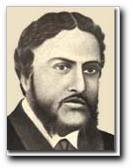

প্রচ্ছদকাহিনী :
কবিতা
ফেসবুক নোট :
পুষ্প ও বৃক্ষ কথা :
ফিচার :
চলচ্চিত্র
থিয়েটার
নাটকের মাইকেল
তানভীর নাহিদ খান
বাংলা নাটকের সাথে মাইকেল মধুসূদন দত্তের প্রথম সংযোগ ঘটে উত্তর কলকাতার বেলগাছিয়া থিয়েটারের মাধ্যমে। মূলত নাটকের মাধ্যমেই তিনি বাংলা সাহিত্যে লেখালেখির সূচনা করেন। খেয়ালী মধুসূদন দত্তের নাটক রচনার পটভূমিও নাটকীয়তায় ভরপুর।
খুব দ্রুতই মাইকেল অনুবাদ সমাপ্ত করেন। রত্নাবলী'র ইংরেজি অনুবাদ করে মাইকেল পাঁচশো টাকা পেয়েছিলেন। এই অর্থ পতিত আর্থিক অবস্থায় উপনীত মাইকেল কে আর্থিক ভাবে খুশি করলেও তার মানসকে স্বস্তি দেয়নি। রত্নাবলীর প্রথম অঙ্ক সম্বন্ধে তিনি বলেন - " মূল নাটকের প্রথম অঙ্ক নেহাৎ-ই সাদামাটা ব্যাপার এবং অনুবাদও এমন কিছু ভালো নয়।"
বন্ধু গৌরদাসের কাছে তো বটেই এমনকি রাজাদের কাছেও মাইকেল নাটকটি সম্পর্কে তাঁর বিরাগ প্রকাশ করলেন। গৌরদাসের মতে - " মধু, তাঁর ইংরেজি রুচির প্রতি পক্ষপাতিত্বের জন্য আমার কাছে বিস্ময় জানাল (জনান্তিকে) 'রাজারা একটা হতচ্ছাড়া নাটকের জন্য কত টাকাই না খরচ করেছেন। একথা যদি আমার আগে জানা থাকত তাহলে তোমাদের থিয়েটারের উপযোগী আমি কিছু দিতে পারতাম।' সে বাংলায় নাটক লিখতে রাজি শুনে আমি হাসলাম এবং রাগিয়ে দেবার জন্য বললাম যদি তাঁর ইচ্ছা হয় তাহলে সে একটা হতচ্ছাড়া বিদ্যাসুন্দর আমাদের মঞ্চে হাজির করুক। আমাদের ভাষায় সত্যিকারের ভালো নাটকের অভাব আছে। এ বিশয়ে সচেতন থাকার দরুন সে আমার খোঁচাটা বুঝে বিড় বিড় করে বলল, 'আমরা দেখতে পাব, আমরা দেখতে পাব।' পরের দিনই সে আমাকে এশিয়াটিক সোসাইটির ঘরে ডেকে নিয়ে গেল কিছু বাংলা ও সংস্কৃত বই ধার নেবার জন্য এবং এক কি দুই সপ্তাহের মধ্যে আমাকে শর্মিষ্ঠার প্রথম কয়েকটা দৃশ্য পড়ে শোনাল যা আমার কানে খাঁটি ধাতুর আওয়াজ বলে মনে হল। আমি পাণ্ডুলিপিটি বেলগাছিয়ায় নিয়ে যেতে চাইলাম কিন্তু প্রথম অঙ্ক শেষ না হওয়া অব্ধি অপেক্ষা করতে বলল। মনে হয়, পরের সপ্তাহেই সে আমাকে পাণ্ডুলিপি দিয়ে অনুরোধ করল আমি যেন এটি রাজাদের এবং বাবু যতীন্দ্রমোহনকে দেখাই।"
রাজারাও নাটকটি পেয়ে খুশি হলেন এবং অভিনয় করবার আগ্রহ প্রকাশ করেন। ১৮৫৯ সালের ৩ সেপ্টেম্বর শর্মিষ্ঠা মঞ্চায়িত হয়। প্রকৃত অর্থে এটিই ঔপনিবেশিক বাংলা নাট্য সাহিত্যে পাশ্চাত্য রীতিতে রচিত প্রথম মৌলিক নাটক। পাশ্চাত্য রীতি অনুসৃত হলেও সংস্কৃত শৈলীও মাইকেল শর্মিষ্ঠা নাটকে বজায় রেখেছেন। সংস্কৃত শৈলীর কাব্য ও অলংকারবহুল দীর্ঘ সংলাপ, বর্ণনাত্মক রীতি, বিদূষক ইত্যাদির সাথে ইংরেজি সাহিত্যের রোমান্টিক ধারার মিশ্রণ নাটকটিতে পরিলক্ষিত হয়।
মঞ্চায়নের পূর্বেই অবশ্য শর্মিষ্ঠা বই আকারে প্রকাশিত হয়। অভিনয় সম্পর্কে স্বয়ং মধুসূদন বন্ধু রাজনারায়ণ বসুকে লিখেছিলেন, ' বেলগাছিয়ায় শর্মিষ্ঠা যখন অভিনীত হয়েছিল যে ধারণা সেটি সৃষ্টি করেছিল তা অবর্ণনীয়। সামান্যতম রোমান্টিক নন এমন দর্শকও শর্মিষ্ঠার চরিত্রে বিমুগ্ধ হয়ে অশ্রুমোচন করেছেন।'
শর্মিষ্ঠা’র অভিনয় দেখার জন্য দর্শকসারিতে লেফটেন্যান্ট গভর্নর গ্রান্ট সাহেব, পাটনার মুনশি আমীর আলি প্রভৃতি বহু গণ্যমান্য দেশী ও বিদেশী ব্যক্তি উপস্থিত ছিলেন। মহাভারতের যযাতি-উপাখ্যান অবলম্বনে শর্মিষ্ঠা নাটকটি রচিত। নাট্যাচার্য শিশিরকুমার বলেন – ‘শর্মিষ্ঠায় সংস্কৃতের প্রভাব খুব বেশি দেখা যায়। কিন্তু এই নাটকের গঠন-সংস্থান খুবই সুন্দর।’

১৮৫৮ সাল। পাইকপাড়ার রাজা প্রতাপচন্দ্র সিংহ ও ঈশ্বরচন্দ্র সিংহের উৎসাহে প্রতিষ্ঠিত হল বেলগাছিয়া থিয়েটার। সিদ্ধান্ত হলো শ্রীহর্ষের রত্নাবলী নাটকটি অভিনীত হবে। নাটকটির বাংলা অনুবাদ করেন রামনারায়ণ তর্করত্ন। রত্নাবলীর অভিনয়ের কথা ইতিমধ্যে শহরের মানুষের কাছে পৌঁছে গেছে। তৎকালীন ছোটলাট হ্যালিডে, বোর্ডের মেম্বার, হাইকোর্টের বিচারপতি সহ বহু ইংরেজও রত্নাবলীর অভিনয় দেখতে আগ্রহী। রাজারাও রাজি কিন্তু মুশকিল হল সাহেবগণ তো ইংরেজি বোঝেননা, কেবল অভিনয় দেখে তাদের মন আর কতটুকু তৃপ্তি বোধ করবে? তাই নাটকটির ইংরেজি অনুবাদের সিদ্ধান্ত গ্রহণ করা হল। কে করবে সাহেবদের রস আস্বাদনযোগ্য মানের অনুবাদ করতে ? ওদিকে মাইকেল তারও বছর দুয়েক আগে মাদ্রাজ থেকে কলকাতায় ফিরেছেন। গৌরদাস বসাকের প্রস্তাবে নাটকটির ইংরেজি অনুবাদ করার ভার পড়ল মাইকেল মধুসূদন দত্তের উপর। খুব দ্রুতই মাইকেল অনুবাদ সমাপ্ত করেন। রত্নাবলী'র ইংরেজি অনুবাদ করে মাইকেল পাঁচশো টাকা পেয়েছিলেন। এই অর্থ পতিত আর্থিক অবস্থায় উপনীত মাইকেল কে আর্থিক ভাবে খুশি করলেও তার মানসকে স্বস্তি দেয়নি। রত্নাবলীর প্রথম অঙ্ক সম্বন্ধে তিনি বলেন - " মূল নাটকের প্রথম অঙ্ক নেহাৎ-ই সাদামাটা ব্যাপার এবং অনুবাদও এমন কিছু ভালো নয়।"
বন্ধু গৌরদাসের কাছে তো বটেই এমনকি রাজাদের কাছেও মাইকেল নাটকটি সম্পর্কে তাঁর বিরাগ প্রকাশ করলেন। গৌরদাসের মতে - " মধু, তাঁর ইংরেজি রুচির প্রতি পক্ষপাতিত্বের জন্য আমার কাছে বিস্ময় জানাল (জনান্তিকে) 'রাজারা একটা হতচ্ছাড়া নাটকের জন্য কত টাকাই না খরচ করেছেন। একথা যদি আমার আগে জানা থাকত তাহলে তোমাদের থিয়েটারের উপযোগী আমি কিছু দিতে পারতাম।' সে বাংলায় নাটক লিখতে রাজি শুনে আমি হাসলাম এবং রাগিয়ে দেবার জন্য বললাম যদি তাঁর ইচ্ছা হয় তাহলে সে একটা হতচ্ছাড়া বিদ্যাসুন্দর আমাদের মঞ্চে হাজির করুক। আমাদের ভাষায় সত্যিকারের ভালো নাটকের অভাব আছে। এ বিশয়ে সচেতন থাকার দরুন সে আমার খোঁচাটা বুঝে বিড় বিড় করে বলল, 'আমরা দেখতে পাব, আমরা দেখতে পাব।' পরের দিনই সে আমাকে এশিয়াটিক সোসাইটির ঘরে ডেকে নিয়ে গেল কিছু বাংলা ও সংস্কৃত বই ধার নেবার জন্য এবং এক কি দুই সপ্তাহের মধ্যে আমাকে শর্মিষ্ঠার প্রথম কয়েকটা দৃশ্য পড়ে শোনাল যা আমার কানে খাঁটি ধাতুর আওয়াজ বলে মনে হল। আমি পাণ্ডুলিপিটি বেলগাছিয়ায় নিয়ে যেতে চাইলাম কিন্তু প্রথম অঙ্ক শেষ না হওয়া অব্ধি অপেক্ষা করতে বলল। মনে হয়, পরের সপ্তাহেই সে আমাকে পাণ্ডুলিপি দিয়ে অনুরোধ করল আমি যেন এটি রাজাদের এবং বাবু যতীন্দ্রমোহনকে দেখাই।"
রাজারাও নাটকটি পেয়ে খুশি হলেন এবং অভিনয় করবার আগ্রহ প্রকাশ করেন। ১৮৫৯ সালের ৩ সেপ্টেম্বর শর্মিষ্ঠা মঞ্চায়িত হয়। প্রকৃত অর্থে এটিই ঔপনিবেশিক বাংলা নাট্য সাহিত্যে পাশ্চাত্য রীতিতে রচিত প্রথম মৌলিক নাটক। পাশ্চাত্য রীতি অনুসৃত হলেও সংস্কৃত শৈলীও মাইকেল শর্মিষ্ঠা নাটকে বজায় রেখেছেন। সংস্কৃত শৈলীর কাব্য ও অলংকারবহুল দীর্ঘ সংলাপ, বর্ণনাত্মক রীতি, বিদূষক ইত্যাদির সাথে ইংরেজি সাহিত্যের রোমান্টিক ধারার মিশ্রণ নাটকটিতে পরিলক্ষিত হয়।
মঞ্চায়নের পূর্বেই অবশ্য শর্মিষ্ঠা বই আকারে প্রকাশিত হয়। অভিনয় সম্পর্কে স্বয়ং মধুসূদন বন্ধু রাজনারায়ণ বসুকে লিখেছিলেন, ' বেলগাছিয়ায় শর্মিষ্ঠা যখন অভিনীত হয়েছিল যে ধারণা সেটি সৃষ্টি করেছিল তা অবর্ণনীয়। সামান্যতম রোমান্টিক নন এমন দর্শকও শর্মিষ্ঠার চরিত্রে বিমুগ্ধ হয়ে অশ্রুমোচন করেছেন।'
শর্মিষ্ঠা’র অভিনয় দেখার জন্য দর্শকসারিতে লেফটেন্যান্ট গভর্নর গ্রান্ট সাহেব, পাটনার মুনশি আমীর আলি প্রভৃতি বহু গণ্যমান্য দেশী ও বিদেশী ব্যক্তি উপস্থিত ছিলেন। মহাভারতের যযাতি-উপাখ্যান অবলম্বনে শর্মিষ্ঠা নাটকটি রচিত। নাট্যাচার্য শিশিরকুমার বলেন – ‘শর্মিষ্ঠায় সংস্কৃতের প্রভাব খুব বেশি দেখা যায়। কিন্তু এই নাটকের গঠন-সংস্থান খুবই সুন্দর।’